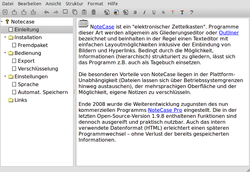

NoteCase
Dieser Artikel wurde für die folgenden Ubuntu-Versionen getestet:
Ubuntu 14.04 Trusty Tahr
Zum Verständnis dieses Artikels sind folgende Seiten hilfreich:
NoteCase  ist ein "elektronischer Zettelkasten". Programme dieser Art werden allgemein als Gliederungseditor (englisch: Outliner) bezeichnet und beinhalten in der Regel einen Texteditor mit einfachen Layoutmöglichkeiten inklusive der Einbindung von Bildern und Hyperlinks. Bedingt durch die Möglichkeit, Informationen (hierarchisch) strukturiert zu gliedern, lässt sich das Programm z.B. auch als Tagebuch einsetzen (siehe auch Notizen).
ist ein "elektronischer Zettelkasten". Programme dieser Art werden allgemein als Gliederungseditor (englisch: Outliner) bezeichnet und beinhalten in der Regel einen Texteditor mit einfachen Layoutmöglichkeiten inklusive der Einbindung von Bildern und Hyperlinks. Bedingt durch die Möglichkeit, Informationen (hierarchisch) strukturiert zu gliedern, lässt sich das Programm z.B. auch als Tagebuch einsetzen (siehe auch Notizen).
Die besonderen Vorteile von NoteCase liegen in der Plattform-Unabhängigkeit (Dateien lassen sich über Betriebssystemgrenzen hinweg austauschen), der mehrsprachigen Oberfläche und der Möglichkeit, eigene Notizen zu verschlüsseln.
Ende 2008 wurde die Weiterentwicklung zugunsten des nun kommerziellen Programms NoteCase Pro eingestellt. Die in der letzten Open-Source-Version 1.9.8 enthaltenen Funktionen sind dennoch ausgereift und praktisch nutzbar. Auch das intern verwendete Datenformat (HTML) erleichtert einen späteren Programmwechsel – ohne Verlust der bereits gespeicherten Informationen.
Installation¶
 Das Programm war bis einschließlich Ubuntu 11.04 in den offiziellen Paketquellen enthalten.
Das Programm war bis einschließlich Ubuntu 11.04 in den offiziellen Paketquellen enthalten.
Fremdpaket¶
Über die Projektseite ist ein Fremdpaket  im .deb-Format verfügbar. Dieses kann heruntergeladen und manuell installiert werden [1].
im .deb-Format verfügbar. Dieses kann heruntergeladen und manuell installiert werden [1].
Hinweis!
Fremdpakete können das System gefährden.
Bedienung¶
 Bei Ubuntu-Varianten mit einem Anwendungsmenü kann das Programm über "Büro -> NoteCase notes manager" gestartet werden [2].
Traditionell teilt ein Outliner das Programmfenster in zwei Spalten auf. Die linke enthält die Gliederung, während die rechte Spalte die eigentlichen Informationen enthält. Das Auf- bzw. Zuklappen einzelner Bereiche der Gliederung ("Falten") erleichtert die Übersicht. Einzelne Gliederungspunkte ("Knoten") können mit Symbolen gekennzeichnet werden.
Die Textformatierungsmöglichkeiten sind relativ rudimentär, was aber kein Nachteil sein muss. Zur Verfügung stehen neben fett, kursiv, unterstrichen und durchgestrichen das Ändern der Textfarbe und des Texthintergrunds, während Schriftart und -größe fest vorgegeben sind und nur programmweit geändert werden können. Auch Komfortfunktionen wie Tabellen oder automatisch nummerierte Listen sind nicht vorhanden.
Daneben können Bilder und Anhänge eingebunden werden. Während letztere entweder verknüpft oder direkt eingebunden ("inline") gespeichert werden können, werden Bilder automatisch "inline" codiert gespeichert. Mit dem "Verknüpfungsassistent" kann markierter Text mit einer Internet-Adresse (http:// nicht vergessen!), einer Datei oder einem Gliederungspunkt verbunden und diese/r später bequem via Doppelklick aufgerufen werden.
Die im Programm integrierte und via F1 erreichbare umfangreiche Hilfe steht stellvertretend für das Problem vieler interessanter Programme unter Linux bzw. Ubuntu: sie ist ausschließlich auf Englisch verfügbar. Erstellt wurde sie mit NoteCase.
Export¶
Die als .ncd (notecase data) gespeicherten Dateien enthalten reinen HTML-Code und können daher auch mit anderen Programmen weiterverarbeitet werden. Das ist z.B. dann notwendig, wenn man seine Notizen ausdrucken möchte, denn eine Druckfunktion ist nicht enthalten.
Durch einfaches Umbenennen (in .html) können Notizen im Browser betrachtet und bei Bedarf auch direkt ins Internet gestellt werden. Zusätzlich kann aber auch ein Export als "HTML-Datei" (Bilder und Anhänge werden als separate Dateien gespeichert) oder als "(Nur)Text-Datei" erfolgen. Ein Export als PDF-Datei ist nur über den oben beschriebenen Umweg mittels anderer Programme möglich.
Verschlüsselung¶
Verschlüsselte (und komprimierte) Dateien sind an der Endung .nce (notecase encrypted) zu erkennen und zwangsläufig nur bei Eingabe des beim Speichern verwendeten Passworts wieder zu öffnen. Als Verschlüsselungsalgorithmus wird Blowfish verwendet. Eine Hintertür – falls man das Passwort vergessen hat – ist nicht bekannt.
Einstellungen¶
Um die Sprache umzustellen, geht man über "Edit -> Configure NoteCase" oder F7 in die Programmeinstellungen und setzt dort ein Häkchen bei "Global -> Use System Settings". Alternativ kann die gewünschte Sprache auch manuell ausgewählt werden. Anschließend muss das Programm neu gestartet werden.
Alle Programmeinstellungen werden in der versteckten Datei ~/.notecase/notecase.ini abgelegt.
Problembehebung¶
Verknüpfungen (Links) können nicht intern kopiert werden, sondern müssen neu erstellt werden.
Obwohl NoteCase weder besonders groß noch besonders anspruchsvoll ist, lässt sich nur die portable Windowsversion mit Wine unter Linux direkt vom USB-Stick betreiben. Wer eine wirklich portable Lösung sucht, sollte sich Tiddlywiki oder Wiki on a Stick (WoaS) anschauen. Für beide Programme wird nur ein Browser benötigt.
Links¶
Rezensionen:
Group test: note takers
- Vergleich verschiedener Outliner-Programme 03/2009 (Tomboy, KnowIt, NoteCase, Basket, TuxCards, Zim)Tipsfor.us
(09/2008)Softpedia.com
(04/2008)Ubuntu-Center.de
 (03/2008)
(03/2008)
Xournal - Notizen und Skizzen grafisch anfertigen und gestalten
Mind Map - eine weitere Methode, um Informationen zu strukturieren
Notizen
 Programmübersicht
Programmübersicht
- Erstellt mit Inyoka
-
 2004 – 2017 ubuntuusers.de • Einige Rechte vorbehalten
2004 – 2017 ubuntuusers.de • Einige Rechte vorbehalten
Lizenz • Kontakt • Datenschutz • Impressum • Serverstatus -
Serverhousing gespendet von